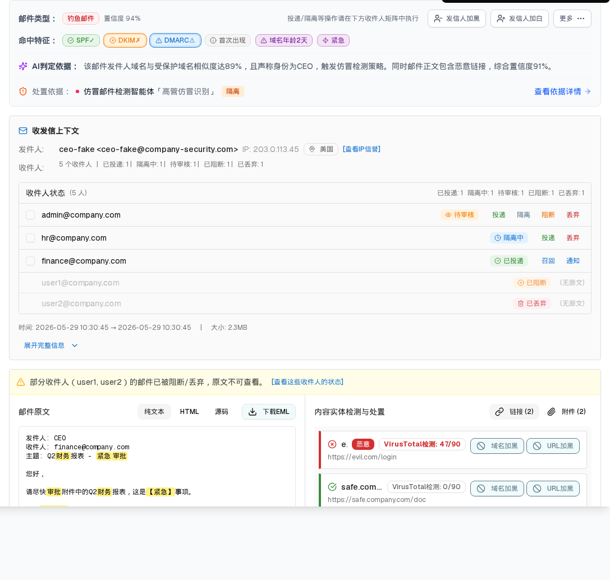
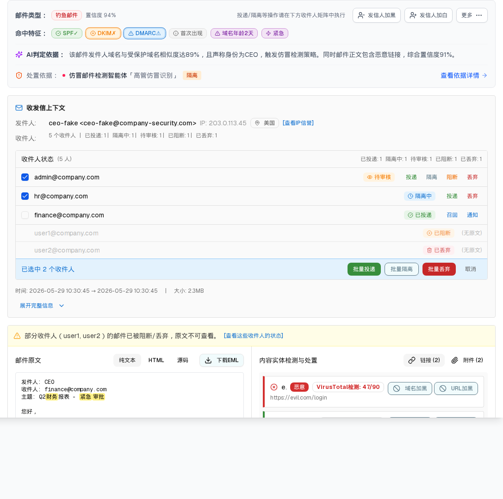
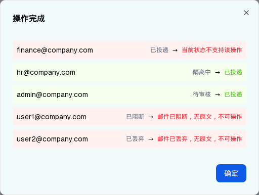

<!DOCTYPE html>
<html lang="zh-CN">
<head>
<meta charset="UTF-8">
<meta name="viewport" content="width=device-width, initial-scale=1.0">
<title>层级11：详情抽屉 · 收件人状态矩阵（多收件人） - 邮件处置中心 HTML 规格说明</title>
<link rel="stylesheet" href="../assets/demo-app.css">
<link rel="stylesheet" href="../assets/spec-style.css">
<style>
  .component-preview { background:#fff; }
  .component-preview .spec-popover { position:absolute; z-index:50; }
  .spec-select-menu { position:absolute; }
  .pass { color:#15803d; font-weight:600; }
  .bad { color:#b91c1c; font-weight:600; }
  .warn { color:#a16207; font-weight:600; }
  .tag-base { display:inline-block; padding:.05rem .375rem; border-radius:.25rem; font-size:.6875rem; font-weight:600; background:#dbeafe; color:#1d4ed8; }
  .tag-overlay { background:#fef3c7; color:#92400e; }
  .tag-gap { background:#fee2e2; color:#b91c1c; }
  .stage-1 { color:#3b82f6; } .stage-2 { color:#06b6d4; } .stage-3 { color:#f59e0b; } .stage-4 { color:#f43f5e; } .stage-5 { color:#10b981; }
</style>
</head>
<body>
<nav class="layer-nav"><a href="./index.html#component-2-4">← 返回主文件</a><a href="./layer-10-detail-overview-single.html">上一层：概览与处置(单投)</a><a href="./layer-12-detail-security-analysis.html">下一层：安全分析 →</a></nav>
<header class="spec-header">
  <h1>交互层级 11（详情层级2）：收件人状态矩阵 + 批量处置（多收件人）</h1>
  <table class="meta-table">
    <tr><td>所属组件</td><td>2.4 详情抽屉 → <code>OverviewActionSection.renderRecipientMatrix()</code></td></tr>
    <tr><td>主文件</td><td><a href="./index.html#component-2-4">index.html#component-2-4</a></td></tr>
    <tr><td>触发路径</td><td>表格行「查看」且该邮件<strong>收件人 &gt; 1</strong>（本例：MIC001，5 个收件人）</td></tr>
  </table>
</header>
<section>
  <h2>预览与截图</h2>
  <div class="preview-hint">勾选可操作的收件人（阻断/丢弃态没有复选框）→ 底部出现批量操作栏 → 点「批量投递」看逐收件人结果弹窗</div>
  <div class="component-preview" data-preview="detail">
    <div id="section-overview" class="border-b border-gray-200"><div class="bg-white dark:bg-gray-800"><div class="p-4 border rounded-md mx-4 mt-4 bg-gray-50 border-gray-200"><div class="flex items-center justify-between gap-4 flex-wrap"><div class="flex items-center gap-2"><span class="text-sm font-semibold text-gray-600">邮件类型：</span><span data-slot="badge" class="inline-flex items-center justify-center rounded-md px-2 py-0.5 text-xs font-medium w-fit whitespace-nowrap shrink-0 [&amp;&gt;svg]:size-3 [&amp;&gt;svg]:pointer-events-none focus-visible:border-ring focus-visible:ring-ring/50 focus-visible:ring-[3px] aria-invalid:ring-destructive/20 dark:aria-invalid:ring-destructive/40 aria-invalid:border-destructive transition-[color,box-shadow] overflow-hidden [a&amp;]:hover:bg-accent [a&amp;]:hover:text-accent-foreground gap-1 border bg-red-50 text-red-700 border-red-200">钓鱼邮件</span><span class="text-xs text-gray-500">置信度 94%</span></div><div class="flex items-center gap-2 flex-wrap"><span class="text-xs text-gray-500 mr-2">投递/隔离等操作请在下方收件人矩阵中执行</span><button data-slot="tooltip-trigger" class="inline-flex items-center justify-center whitespace-nowrap font-medium transition-all disabled:pointer-events-none disabled:opacity-50 [&amp;_svg]:pointer-events-none [&amp;_svg:not([class*='size-'])]:size-4 shrink-0 [&amp;_svg]:shrink-0 outline-none focus-visible:border-ring focus-visible:ring-ring/50 focus-visible:ring-[3px] aria-invalid:ring-destructive/20 dark:aria-invalid:ring-destructive/40 aria-invalid:border-destructive border shadow-xs hover:bg-accent dark:bg-input/30 dark:border-input dark:hover:bg-input/50 rounded-md px-3 has-[&gt;svg]:px-2.5 gap-1.5 text-xs h-8 border-gray-300 text-gray-600 hover:border-blue-500 hover:text-blue-600 bg-white" data-state="closed"><svg xmlns="http://www.w3.org/2000/svg" width="24" height="24" viewBox="0 0 24 24" fill="none" stroke="currentColor" stroke-width="2" stroke-linecap="round" stroke-linejoin="round" class="lucide lucide-user-minus w-3.5 h-3.5"><path d="M16 21v-2a4 4 0 0 0-4-4H6a4 4 0 0 0-4 4v2"></path><circle cx="9" cy="7" r="4"></circle><line x1="22" x2="16" y1="11" y2="11"></line></svg>发信人加黑</button><button data-slot="tooltip-trigger" class="inline-flex items-center justify-center whitespace-nowrap font-medium transition-all disabled:pointer-events-none disabled:opacity-50 [&amp;_svg]:pointer-events-none [&amp;_svg:not([class*='size-'])]:size-4 shrink-0 [&amp;_svg]:shrink-0 outline-none focus-visible:border-ring focus-visible:ring-ring/50 focus-visible:ring-[3px] aria-invalid:ring-destructive/20 dark:aria-invalid:ring-destructive/40 aria-invalid:border-destructive border shadow-xs hover:bg-accent dark:bg-input/30 dark:border-input dark:hover:bg-input/50 rounded-md px-3 has-[&gt;svg]:px-2.5 gap-1.5 text-xs h-8 border-gray-300 text-gray-600 hover:border-blue-500 hover:text-blue-600 bg-white" data-state="closed"><svg xmlns="http://www.w3.org/2000/svg" width="24" height="24" viewBox="0 0 24 24" fill="none" stroke="currentColor" stroke-width="2" stroke-linecap="round" stroke-linejoin="round" class="lucide lucide-user-plus w-3.5 h-3.5"><path d="M16 21v-2a4 4 0 0 0-4-4H6a4 4 0 0 0-4 4v2"></path><circle cx="9" cy="7" r="4"></circle><line x1="19" x2="19" y1="8" y2="14"></line><line x1="22" x2="16" y1="11" y2="11"></line></svg>发信人加白</button><button data-slot="tooltip-trigger" class="inline-flex items-center justify-center whitespace-nowrap font-medium transition-all disabled:pointer-events-none disabled:opacity-50 [&amp;_svg]:pointer-events-none [&amp;_svg:not([class*='size-'])]:size-4 shrink-0 [&amp;_svg]:shrink-0 outline-none focus-visible:border-ring focus-visible:ring-ring/50 focus-visible:ring-[3px] aria-invalid:ring-destructive/20 dark:aria-invalid:ring-destructive/40 aria-invalid:border-destructive border shadow-xs hover:bg-accent hover:text-accent-foreground dark:bg-input/30 dark:border-input dark:hover:bg-input/50 rounded-md px-3 has-[&gt;svg]:px-2.5 gap-1.5 text-xs h-8 border-gray-300 text-gray-600 bg-white" type="button" id="radix-_r_7k_" aria-haspopup="menu" aria-expanded="false" data-state="closed">更多<svg xmlns="http://www.w3.org/2000/svg" width="24" height="24" viewBox="0 0 24 24" fill="none" stroke="currentColor" stroke-width="2" stroke-linecap="round" stroke-linejoin="round" class="lucide lucide-ellipsis w-3.5 h-3.5"><circle cx="12" cy="12" r="1"></circle><circle cx="19" cy="12" r="1"></circle><circle cx="5" cy="12" r="1"></circle></svg></button></div></div><div class="flex items-center gap-2 mt-3 flex-wrap"><span class="text-sm font-semibold text-gray-600">命中特征：</span><span data-slot="tooltip-trigger" class="inline-flex items-center justify-center rounded-md px-2 py-0.5 text-xs font-medium w-fit whitespace-nowrap shrink-0 [&amp;&gt;svg]:size-3 [&amp;&gt;svg]:pointer-events-none focus-visible:border-ring focus-visible:ring-ring/50 focus-visible:ring-[3px] aria-invalid:ring-destructive/20 dark:aria-invalid:ring-destructive/40 aria-invalid:border-destructive transition-[color,box-shadow] overflow-hidden [a&amp;]:hover:bg-accent [a&amp;]:hover:text-accent-foreground gap-1 cursor-help border bg-[#E8F5E9] text-[#388E3C] border-[#A5D6A7]" data-state="closed"><svg xmlns="http://www.w3.org/2000/svg" width="24" height="24" viewBox="0 0 24 24" fill="none" stroke="currentColor" stroke-width="2" stroke-linecap="round" stroke-linejoin="round" class="lucide lucide-circle-check-big w-3 h-3"><path d="M21.801 10A10 10 0 1 1 17 3.335"></path><path d="m9 11 3 3L22 4"></path></svg>SPF✓</span><span data-slot="tooltip-trigger" class="inline-flex items-center justify-center rounded-md px-2 py-0.5 text-xs font-medium w-fit whitespace-nowrap shrink-0 [&amp;&gt;svg]:size-3 [&amp;&gt;svg]:pointer-events-none focus-visible:border-ring focus-visible:ring-ring/50 focus-visible:ring-[3px] aria-invalid:ring-destructive/20 dark:aria-invalid:ring-destructive/40 aria-invalid:border-destructive transition-[color,box-shadow] overflow-hidden [a&amp;]:hover:bg-accent [a&amp;]:hover:text-accent-foreground gap-1 cursor-help border bg-[#FFF3E0] text-[#F57C00] border-[#FFCC80] ring-1 ring-offset-1" data-state="closed"><svg xmlns="http://www.w3.org/2000/svg" width="24" height="24" viewBox="0 0 24 24" fill="none" stroke="currentColor" stroke-width="2" stroke-linecap="round" stroke-linejoin="round" class="lucide lucide-circle-x w-3 h-3"><circle cx="12" cy="12" r="10"></circle><path d="m15 9-6 6"></path><path d="m9 9 6 6"></path></svg>DKIM✗</span><span data-slot="tooltip-trigger" class="inline-flex items-center justify-center rounded-md px-2 py-0.5 text-xs font-medium w-fit whitespace-nowrap shrink-0 [&amp;&gt;svg]:size-3 [&amp;&gt;svg]:pointer-events-none focus-visible:border-ring focus-visible:ring-ring/50 focus-visible:ring-[3px] aria-invalid:ring-destructive/20 dark:aria-invalid:ring-destructive/40 aria-invalid:border-destructive transition-[color,box-shadow] overflow-hidden [a&amp;]:hover:bg-accent [a&amp;]:hover:text-accent-foreground gap-1 cursor-help border bg-[#E3F2FD] text-[#1976D2] border-[#90CAF9] ring-1 ring-offset-1" data-state="closed"><svg xmlns="http://www.w3.org/2000/svg" width="24" height="24" viewBox="0 0 24 24" fill="none" stroke="currentColor" stroke-width="2" stroke-linecap="round" stroke-linejoin="round" class="lucide lucide-triangle-alert w-3 h-3"><path d="m21.73 18-8-14a2 2 0 0 0-3.48 0l-8 14A2 2 0 0 0 4 21h16a2 2 0 0 0 1.73-3"></path><path d="M12 9v4"></path><path d="M12 17h.01"></path></svg>DMARC⚠</span><span data-slot="tooltip-trigger" class="inline-flex items-center justify-center rounded-md border px-2 py-0.5 text-xs font-medium w-fit whitespace-nowrap shrink-0 [&amp;&gt;svg]:size-3 [&amp;&gt;svg]:pointer-events-none focus-visible:border-ring focus-visible:ring-ring/50 focus-visible:ring-[3px] aria-invalid:ring-destructive/20 dark:aria-invalid:ring-destructive/40 aria-invalid:border-destructive transition-[color,box-shadow] overflow-hidden [a&amp;]:hover:bg-accent [a&amp;]:hover:text-accent-foreground bg-[#F5F5F5] text-[#616161] border-[#E0E0E0] gap-1 cursor-help" data-state="closed"><svg xmlns="http://www.w3.org/2000/svg" width="24" height="24" viewBox="0 0 24 24" fill="none" stroke="currentColor" stroke-width="2" stroke-linecap="round" stroke-linejoin="round" class="lucide lucide-info w-3 h-3"><circle cx="12" cy="12" r="10"></circle><path d="M12 16v-4"></path><path d="M12 8h.01"></path></svg>首次出现</span><span data-slot="tooltip-trigger" class="inline-flex items-center justify-center rounded-md border px-2 py-0.5 text-xs font-medium w-fit whitespace-nowrap shrink-0 [&amp;&gt;svg]:size-3 [&amp;&gt;svg]:pointer-events-none focus-visible:border-ring focus-visible:ring-ring/50 focus-visible:ring-[3px] aria-invalid:ring-destructive/20 dark:aria-invalid:ring-destructive/40 aria-invalid:border-destructive transition-[color,box-shadow] overflow-hidden [a&amp;]:hover:bg-accent [a&amp;]:hover:text-accent-foreground bg-[#F3E5F5] text-[#7B1FA2] border-[#CE93D8] gap-1 cursor-help" data-state="closed"><svg xmlns="http://www.w3.org/2000/svg" width="24" height="24" viewBox="0 0 24 24" fill="none" stroke="currentColor" stroke-width="2" stroke-linecap="round" stroke-linejoin="round" class="lucide lucide-triangle-alert w-3 h-3"><path d="m21.73 18-8-14a2 2 0 0 0-3.48 0l-8 14A2 2 0 0 0 4 21h16a2 2 0 0 0 1.73-3"></path><path d="M12 9v4"></path><path d="M12 17h.01"></path></svg>域名年龄2天</span><span data-slot="tooltip-trigger" class="inline-flex items-center justify-center rounded-md border px-2 py-0.5 text-xs font-medium w-fit whitespace-nowrap shrink-0 [&amp;&gt;svg]:size-3 [&amp;&gt;svg]:pointer-events-none focus-visible:border-ring focus-visible:ring-ring/50 focus-visible:ring-[3px] aria-invalid:ring-destructive/20 dark:aria-invalid:ring-destructive/40 aria-invalid:border-destructive transition-[color,box-shadow] overflow-hidden [a&amp;]:hover:bg-accent [a&amp;]:hover:text-accent-foreground bg-[#F3E5F5] text-[#7B1FA2] border-[#CE93D8] gap-1 cursor-help" data-state="closed"><svg xmlns="http://www.w3.org/2000/svg" width="24" height="24" viewBox="0 0 24 24" fill="none" stroke="currentColor" stroke-width="2" stroke-linecap="round" stroke-linejoin="round" class="lucide lucide-zap w-3 h-3"><path d="M4 14a1 1 0 0 1-.78-1.63l9.9-10.2a.5.5 0 0 1 .86.46l-1.92 6.02A1 1 0 0 0 13 10h7a1 1 0 0 1 .78 1.63l-9.9 10.2a.5.5 0 0 1-.86-.46l1.92-6.02A1 1 0 0 0 11 14z"></path></svg>紧急</span></div><div class="border-t border-gray-100 my-3"></div><div class="flex items-start gap-2"><div class="flex items-center gap-2 flex-shrink-0"><svg xmlns="http://www.w3.org/2000/svg" width="24" height="24" viewBox="0 0 24 24" fill="none" stroke="currentColor" stroke-width="2" stroke-linecap="round" stroke-linejoin="round" class="lucide lucide-sparkles w-4 h-4 text-purple-600"><path d="M9.937 15.5A2 2 0 0 0 8.5 14.063l-6.135-1.582a.5.5 0 0 1 0-.962L8.5 9.936A2 2 0 0 0 9.937 8.5l1.582-6.135a.5.5 0 0 1 .963 0L14.063 8.5A2 2 0 0 0 15.5 9.937l6.135 1.581a.5.5 0 0 1 0 .964L15.5 14.063a2 2 0 0 0-1.437 1.437l-1.582 6.135a.5.5 0 0 1-.963 0z"></path><path d="M20 3v4"></path><path d="M22 5h-4"></path><path d="M4 17v2"></path><path d="M5 18H3"></path></svg><span class="text-sm font-semibold text-gray-700">AI判定依据：</span></div><p class="text-sm text-gray-600 flex-1">该邮件发件人域名与受保护域名相似度达89%，且声称身份为CEO，触发仿冒检测策略。同时邮件正文包含恶意链接，综合置信度91%。</p></div><div class="border-t border-gray-100 my-3"></div><div class="flex items-center gap-2 flex-wrap text-sm"><svg xmlns="http://www.w3.org/2000/svg" width="24" height="24" viewBox="0 0 24 24" fill="none" stroke="currentColor" stroke-width="2" stroke-linecap="round" stroke-linejoin="round" class="lucide lucide-shield-alert w-4 h-4 text-orange-600 shrink-0"><path d="M20 13c0 5-3.5 7.5-7.66 8.95a1 1 0 0 1-.67-.01C7.5 20.5 4 18 4 13V6a1 1 0 0 1 1-1c2 0 4.5-1.2 6.24-2.72a1.17 1.17 0 0 1 1.52 0C14.51 3.81 17 5 19 5a1 1 0 0 1 1 1z"></path><path d="M12 8v4"></path><path d="M12 16h.01"></path></svg><span class="text-gray-500 shrink-0">处置依据：</span><span class="w-1.5 h-1.5 rounded-full shrink-0 bg-rose-500"></span><span class="font-medium text-gray-900">仿冒邮件检测智能体<span class="text-gray-500 font-normal">「高管仿冒识别」</span></span><span class="text-xs font-medium px-2 py-0.5 rounded bg-orange-100 text-orange-700">隔离</span><button class="group flex items-center gap-1 text-blue-600 hover:text-blue-700 hover:underline ml-auto shrink-0">查看依据详情<svg xmlns="http://www.w3.org/2000/svg" width="24" height="24" viewBox="0 0 24 24" fill="none" stroke="currentColor" stroke-width="2" stroke-linecap="round" stroke-linejoin="round" class="lucide lucide-arrow-right w-3.5 h-3.5 opacity-70 group-hover:opacity-100 group-hover:translate-x-0.5 transition-transform"><path d="M5 12h14"></path><path d="m12 5 7 7-7 7"></path></svg></button></div></div><div class="p-4 mx-4 mt-4 bg-[#FAFAFA] rounded border border-[#E0E0E0]"><h4 class="text-sm font-semibold mb-3 flex items-center gap-2 text-[#212121]"><svg xmlns="http://www.w3.org/2000/svg" width="24" height="24" viewBox="0 0 24 24" fill="none" stroke="currentColor" stroke-width="2" stroke-linecap="round" stroke-linejoin="round" class="lucide lucide-mail w-4 h-4 text-[#1976D2]"><rect width="20" height="16" x="2" y="4" rx="2"></rect><path d="m22 7-8.97 5.7a1.94 1.94 0 0 1-2.06 0L2 7"></path></svg>收发信上下文</h4><div class="space-y-2 text-sm"><div class="flex items-center gap-2 flex-wrap"><span class="text-[#757575] w-16">发件人:</span><span class="font-medium text-[#212121]">ceo-fake &lt;ceo-fake@company-security.com&gt;</span><span class="text-[#9E9E9E]">IP: 203.0.113.45</span><span data-slot="badge" class="inline-flex items-center justify-center rounded-md border px-2 py-0.5 font-medium w-fit whitespace-nowrap shrink-0 [&amp;&gt;svg]:size-3 gap-1 [&amp;&gt;svg]:pointer-events-none focus-visible:border-ring focus-visible:ring-ring/50 focus-visible:ring-[3px] aria-invalid:ring-destructive/20 dark:aria-invalid:ring-destructive/40 aria-invalid:border-destructive transition-[color,box-shadow] overflow-hidden [a&amp;]:hover:bg-accent [a&amp;]:hover:text-accent-foreground text-xs border-[#E0E0E0] text-[#616161]"><svg xmlns="http://www.w3.org/2000/svg" width="24" height="24" viewBox="0 0 24 24" fill="none" stroke="currentColor" stroke-width="2" stroke-linecap="round" stroke-linejoin="round" class="lucide lucide-map-pin w-3 h-3 mr-1"><path d="M20 10c0 4.993-5.539 10.193-7.399 11.799a1 1 0 0 1-1.202 0C9.539 20.193 4 14.993 4 10a8 8 0 0 1 16 0"></path><circle cx="12" cy="10" r="3"></circle></svg>美国</span><button data-slot="button" class="inline-flex items-center justify-center whitespace-nowrap font-medium transition-all disabled:pointer-events-none disabled:opacity-50 [&amp;_svg]:pointer-events-none [&amp;_svg:not([class*='size-'])]:size-4 shrink-0 [&amp;_svg]:shrink-0 outline-none focus-visible:border-ring focus-visible:ring-ring/50 focus-visible:ring-[3px] aria-invalid:ring-destructive/20 dark:aria-invalid:ring-destructive/40 aria-invalid:border-destructive underline-offset-4 hover:underline rounded-md gap-1.5 has-[&gt;svg]:px-2.5 h-auto p-0 text-xs text-[#1976D2]">[查看IP信誉]</button></div><div class="flex items-start gap-2 flex-wrap"><span class="text-[#757575] w-16 pt-1">收件人:</span><div class="flex items-center gap-2 text-xs text-[#757575]"><span>5 个收件人</span><span>|</span><span>已投递: 1 | </span><span>隔离中: 1 | </span><span>待审核: 1 | </span><span>已阻断: 1 | </span><span>已丢弃: 1</span></div></div><div class="mt-4 border border-[#E0E0E0] rounded overflow-hidden"><div class="px-3 py-2 bg-[#FAFAFA] border-b border-[#E0E0E0] flex items-center justify-between"><div class="flex items-center gap-2"><span class="text-sm font-medium text-[#212121]">收件人状态</span><span class="text-xs text-[#757575]">(5 人)</span></div><div class="flex items-center gap-2 text-xs text-[#757575]"><span>已投递: 1</span><span>隔离中: 1</span><span>待审核: 1</span><span>已阻断: 1</span><span>已丢弃: 1</span></div></div><div class="divide-y divide-[#E0E0E0]" data-spec-matrix=""><div class="px-3 py-2 flex items-center justify-between gap-4"><div class="flex items-center gap-3 min-w-0 flex-1"><button type="button" role="checkbox" aria-checked="false" data-state="unchecked" value="on" data-slot="checkbox" class="peer border-input dark:bg-input/30 data-[state=checked]:bg-primary data-[state=checked]:text-primary-foreground dark:data-[state=checked]:bg-primary data-[state=checked]:border-primary focus-visible:border-ring focus-visible:ring-ring/50 aria-invalid:ring-destructive/20 dark:aria-invalid:ring-destructive/40 aria-invalid:border-destructive size-4 shrink-0 rounded-[4px] border shadow-xs transition-shadow outline-none focus-visible:ring-[3px] disabled:cursor-not-allowed disabled:opacity-50 flex-shrink-0"></button><span class="text-sm truncate max-w-[200px]" data-state="closed" data-slot="tooltip-trigger">admin@company.com</span></div><div class="flex items-center gap-1 px-2 py-0.5 rounded-sm text-xs font-medium flex-shrink-0 bg-[#FFF3E0] text-[#F57C00]"><svg xmlns="http://www.w3.org/2000/svg" width="24" height="24" viewBox="0 0 24 24" fill="none" stroke="currentColor" stroke-width="2" stroke-linecap="round" stroke-linejoin="round" class="lucide lucide-eye w-3 h-3"><path d="M2.062 12.348a1 1 0 0 1 0-.696 10.75 10.75 0 0 1 19.876 0 1 1 0 0 1 0 .696 10.75 10.75 0 0 1-19.876 0"></path><circle cx="12" cy="12" r="3"></circle></svg>待审核</div><div class="flex items-center gap-1 flex-shrink-0"><button data-slot="button" class="inline-flex items-center justify-center whitespace-nowrap font-medium transition-all disabled:pointer-events-none disabled:opacity-50 [&amp;_svg]:pointer-events-none [&amp;_svg:not([class*='size-'])]:size-4 shrink-0 [&amp;_svg]:shrink-0 outline-none focus-visible:border-ring focus-visible:ring-ring/50 focus-visible:ring-[3px] aria-invalid:ring-destructive/20 dark:aria-invalid:ring-destructive/40 aria-invalid:border-destructive hover:text-accent-foreground dark:hover:bg-accent/50 rounded-md gap-1.5 has-[&gt;svg]:px-2.5 h-6 px-2 text-xs text-[#388E3C] hover:bg-[#E8F5E9]">投递</button><button data-slot="button" class="inline-flex items-center justify-center whitespace-nowrap font-medium transition-all disabled:pointer-events-none disabled:opacity-50 [&amp;_svg]:pointer-events-none [&amp;_svg:not([class*='size-'])]:size-4 shrink-0 [&amp;_svg]:shrink-0 outline-none focus-visible:border-ring focus-visible:ring-ring/50 focus-visible:ring-[3px] aria-invalid:ring-destructive/20 dark:aria-invalid:ring-destructive/40 aria-invalid:border-destructive hover:text-accent-foreground dark:hover:bg-accent/50 rounded-md gap-1.5 has-[&gt;svg]:px-2.5 h-6 px-2 text-xs text-[#607D8B] hover:bg-[#ECEFF1]">隔离</button><button data-slot="button" class="inline-flex items-center justify-center whitespace-nowrap font-medium transition-all disabled:pointer-events-none disabled:opacity-50 [&amp;_svg]:pointer-events-none [&amp;_svg:not([class*='size-'])]:size-4 shrink-0 [&amp;_svg]:shrink-0 outline-none focus-visible:border-ring focus-visible:ring-ring/50 focus-visible:ring-[3px] aria-invalid:ring-destructive/20 dark:aria-invalid:ring-destructive/40 aria-invalid:border-destructive hover:text-accent-foreground dark:hover:bg-accent/50 rounded-md gap-1.5 has-[&gt;svg]:px-2.5 h-6 px-2 text-xs text-[#EF6C00] hover:bg-[#FFF3E0]">阻断</button><button data-slot="button" class="inline-flex items-center justify-center whitespace-nowrap font-medium transition-all disabled:pointer-events-none disabled:opacity-50 [&amp;_svg]:pointer-events-none [&amp;_svg:not([class*='size-'])]:size-4 shrink-0 [&amp;_svg]:shrink-0 outline-none focus-visible:border-ring focus-visible:ring-ring/50 focus-visible:ring-[3px] aria-invalid:ring-destructive/20 dark:aria-invalid:ring-destructive/40 aria-invalid:border-destructive hover:text-accent-foreground dark:hover:bg-accent/50 rounded-md gap-1.5 has-[&gt;svg]:px-2.5 h-6 px-2 text-xs text-[#C62828] hover:bg-[#FFEBEE]">丢弃</button></div></div><div class="px-3 py-2 flex items-center justify-between gap-4"><div class="flex items-center gap-3 min-w-0 flex-1"><button type="button" role="checkbox" aria-checked="false" data-state="unchecked" value="on" data-slot="checkbox" class="peer border-input dark:bg-input/30 data-[state=checked]:bg-primary data-[state=checked]:text-primary-foreground dark:data-[state=checked]:bg-primary data-[state=checked]:border-primary focus-visible:border-ring focus-visible:ring-ring/50 aria-invalid:ring-destructive/20 dark:aria-invalid:ring-destructive/40 aria-invalid:border-destructive size-4 shrink-0 rounded-[4px] border shadow-xs transition-shadow outline-none focus-visible:ring-[3px] disabled:cursor-not-allowed disabled:opacity-50 flex-shrink-0"></button><span class="text-sm truncate max-w-[200px]" data-state="closed" data-slot="tooltip-trigger">hr@company.com</span></div><div class="flex items-center gap-1 px-2 py-0.5 rounded-sm text-xs font-medium flex-shrink-0 bg-[#E3F2FD] text-[#1976D2]"><svg xmlns="http://www.w3.org/2000/svg" width="24" height="24" viewBox="0 0 24 24" fill="none" stroke="currentColor" stroke-width="2" stroke-linecap="round" stroke-linejoin="round" class="lucide lucide-clock w-3 h-3"><circle cx="12" cy="12" r="10"></circle><polyline points="12 6 12 12 16 14"></polyline></svg>隔离中</div><div class="flex items-center gap-1 flex-shrink-0"><button data-slot="button" class="inline-flex items-center justify-center whitespace-nowrap font-medium transition-all disabled:pointer-events-none disabled:opacity-50 [&amp;_svg]:pointer-events-none [&amp;_svg:not([class*='size-'])]:size-4 shrink-0 [&amp;_svg]:shrink-0 outline-none focus-visible:border-ring focus-visible:ring-ring/50 focus-visible:ring-[3px] aria-invalid:ring-destructive/20 dark:aria-invalid:ring-destructive/40 aria-invalid:border-destructive hover:text-accent-foreground dark:hover:bg-accent/50 rounded-md gap-1.5 has-[&gt;svg]:px-2.5 h-6 px-2 text-xs text-[#388E3C] hover:bg-[#E8F5E9]">投递</button><button data-slot="button" class="inline-flex items-center justify-center whitespace-nowrap font-medium transition-all disabled:pointer-events-none disabled:opacity-50 [&amp;_svg]:pointer-events-none [&amp;_svg:not([class*='size-'])]:size-4 shrink-0 [&amp;_svg]:shrink-0 outline-none focus-visible:border-ring focus-visible:ring-ring/50 focus-visible:ring-[3px] aria-invalid:ring-destructive/20 dark:aria-invalid:ring-destructive/40 aria-invalid:border-destructive hover:text-accent-foreground dark:hover:bg-accent/50 rounded-md gap-1.5 has-[&gt;svg]:px-2.5 h-6 px-2 text-xs text-[#C62828] hover:bg-[#FFEBEE]">丢弃</button></div></div><div class="px-3 py-2 flex items-center justify-between gap-4"><div class="flex items-center gap-3 min-w-0 flex-1"><button type="button" role="checkbox" aria-checked="false" data-state="unchecked" value="on" data-slot="checkbox" class="peer border-input dark:bg-input/30 data-[state=checked]:bg-primary data-[state=checked]:text-primary-foreground dark:data-[state=checked]:bg-primary data-[state=checked]:border-primary focus-visible:border-ring focus-visible:ring-ring/50 aria-invalid:ring-destructive/20 dark:aria-invalid:ring-destructive/40 aria-invalid:border-destructive size-4 shrink-0 rounded-[4px] border shadow-xs transition-shadow outline-none focus-visible:ring-[3px] disabled:cursor-not-allowed disabled:opacity-50 flex-shrink-0"></button><span class="text-sm truncate max-w-[200px]" data-state="closed" data-slot="tooltip-trigger">finance@company.com</span></div><div class="flex items-center gap-1 px-2 py-0.5 rounded-sm text-xs font-medium flex-shrink-0 bg-[#E8F5E9] text-[#388E3C]"><svg xmlns="http://www.w3.org/2000/svg" width="24" height="24" viewBox="0 0 24 24" fill="none" stroke="currentColor" stroke-width="2" stroke-linecap="round" stroke-linejoin="round" class="lucide lucide-circle-check-big w-3 h-3"><path d="M21.801 10A10 10 0 1 1 17 3.335"></path><path d="m9 11 3 3L22 4"></path></svg>已投递</div><div class="flex items-center gap-1 flex-shrink-0"><button data-slot="button" class="inline-flex items-center justify-center whitespace-nowrap font-medium transition-all disabled:pointer-events-none disabled:opacity-50 [&amp;_svg]:pointer-events-none [&amp;_svg:not([class*='size-'])]:size-4 shrink-0 [&amp;_svg]:shrink-0 outline-none focus-visible:border-ring focus-visible:ring-ring/50 focus-visible:ring-[3px] aria-invalid:ring-destructive/20 dark:aria-invalid:ring-destructive/40 aria-invalid:border-destructive hover:text-accent-foreground dark:hover:bg-accent/50 rounded-md gap-1.5 has-[&gt;svg]:px-2.5 h-6 px-2 text-xs text-[#1976D2] hover:bg-[#E3F2FD]">召回</button><button data-slot="button" class="inline-flex items-center justify-center whitespace-nowrap font-medium transition-all disabled:pointer-events-none disabled:opacity-50 [&amp;_svg]:pointer-events-none [&amp;_svg:not([class*='size-'])]:size-4 shrink-0 [&amp;_svg]:shrink-0 outline-none focus-visible:border-ring focus-visible:ring-ring/50 focus-visible:ring-[3px] aria-invalid:ring-destructive/20 dark:aria-invalid:ring-destructive/40 aria-invalid:border-destructive hover:text-accent-foreground dark:hover:bg-accent/50 rounded-md gap-1.5 has-[&gt;svg]:px-2.5 h-6 px-2 text-xs text-[#1976D2] hover:bg-[#E3F2FD]">通知</button></div></div><div class="px-3 py-2 flex items-center justify-between gap-4 bg-[#FAFAFA] opacity-70"><div class="flex items-center gap-3 min-w-0 flex-1"><div class="w-4 flex-shrink-0"></div><span class="text-sm truncate max-w-[200px] text-[#9E9E9E]" data-state="closed" data-slot="tooltip-trigger">user1@company.com</span></div><div class="flex items-center gap-1 px-2 py-0.5 rounded-sm text-xs font-medium flex-shrink-0 bg-[#FFF3E0] text-[#EF6C00]"><svg xmlns="http://www.w3.org/2000/svg" width="24" height="24" viewBox="0 0 24 24" fill="none" stroke="currentColor" stroke-width="2" stroke-linecap="round" stroke-linejoin="round" class="lucide lucide-circle-x w-3 h-3"><circle cx="12" cy="12" r="10"></circle><path d="m15 9-6 6"></path><path d="m9 9 6 6"></path></svg>已阻断</div><div class="flex items-center gap-1 flex-shrink-0"><span class="text-xs text-[#9E9E9E]">(无原文)</span></div></div><div class="px-3 py-2 flex items-center justify-between gap-4 bg-[#FAFAFA] opacity-70"><div class="flex items-center gap-3 min-w-0 flex-1"><div class="w-4 flex-shrink-0"></div><span class="text-sm truncate max-w-[200px] text-[#9E9E9E]" data-state="closed" data-slot="tooltip-trigger">user2@company.com</span></div><div class="flex items-center gap-1 px-2 py-0.5 rounded-sm text-xs font-medium flex-shrink-0 bg-[#FFEBEE] text-[#C62828]"><svg xmlns="http://www.w3.org/2000/svg" width="24" height="24" viewBox="0 0 24 24" fill="none" stroke="currentColor" stroke-width="2" stroke-linecap="round" stroke-linejoin="round" class="lucide lucide-trash2 w-3 h-3"><path d="M3 6h18"></path><path d="M19 6v14c0 1-1 2-2 2H7c-1 0-2-1-2-2V6"></path><path d="M8 6V4c0-1 1-2 2-2h4c1 0 2 1 2 2v2"></path><line x1="10" x2="10" y1="11" y2="17"></line><line x1="14" x2="14" y1="11" y2="17"></line></svg>已丢弃</div><div class="flex items-center gap-1 flex-shrink-0"><span class="text-xs text-[#9E9E9E]">(无原文)</span></div></div></div><div class="px-3 py-2 bg-[#E3F2FD] dark:bg-blue-900/20 border-t border-[#90CAF9] dark:border-blue-800 flex items-center justify-between" data-spec-batchbar=""><span class="text-sm text-[#1976D2] dark:text-blue-300">已选中 0 个收件人</span><div class="flex items-center gap-2"><button data-slot="button" class="inline-flex items-center justify-center whitespace-nowrap font-medium transition-all disabled:pointer-events-none disabled:opacity-50 [&amp;_svg]:pointer-events-none [&amp;_svg:not([class*='size-'])]:size-4 shrink-0 [&amp;_svg]:shrink-0 outline-none focus-visible:border-ring focus-visible:ring-ring/50 focus-visible:ring-[3px] aria-invalid:ring-destructive/20 dark:aria-invalid:ring-destructive/40 aria-invalid:border-destructive rounded-md gap-1.5 px-3 has-[&gt;svg]:px-2.5 h-7 text-xs bg-[#388E3C] hover:bg-[#2E7D32] text-white">批量投递</button><button data-slot="button" class="inline-flex items-center justify-center whitespace-nowrap font-medium transition-all disabled:pointer-events-none disabled:opacity-50 [&amp;_svg]:pointer-events-none [&amp;_svg:not([class*='size-'])]:size-4 shrink-0 [&amp;_svg]:shrink-0 outline-none focus-visible:border-ring focus-visible:ring-ring/50 focus-visible:ring-[3px] aria-invalid:ring-destructive/20 dark:aria-invalid:ring-destructive/40 aria-invalid:border-destructive border bg-background shadow-xs hover:text-accent-foreground dark:bg-input/30 dark:border-input dark:hover:bg-input/50 rounded-md gap-1.5 px-3 has-[&gt;svg]:px-2.5 h-7 text-xs border-[#607D8B] text-[#607D8B] hover:bg-[#ECEFF1]">批量隔离</button><button data-slot="button" class="inline-flex items-center justify-center whitespace-nowrap font-medium transition-all disabled:pointer-events-none disabled:opacity-50 [&amp;_svg]:pointer-events-none [&amp;_svg:not([class*='size-'])]:size-4 shrink-0 [&amp;_svg]:shrink-0 outline-none focus-visible:border-ring focus-visible:ring-ring/50 focus-visible:ring-[3px] aria-invalid:ring-destructive/20 dark:aria-invalid:ring-destructive/40 aria-invalid:border-destructive rounded-md gap-1.5 px-3 has-[&gt;svg]:px-2.5 h-7 text-xs bg-[#C62828] hover:bg-[#B71C1C] text-white">批量丢弃</button><button data-slot="button" class="inline-flex items-center justify-center whitespace-nowrap font-medium transition-all disabled:pointer-events-none disabled:opacity-50 [&amp;_svg]:pointer-events-none [&amp;_svg:not([class*='size-'])]:size-4 shrink-0 [&amp;_svg]:shrink-0 outline-none focus-visible:border-ring focus-visible:ring-ring/50 focus-visible:ring-[3px] aria-invalid:ring-destructive/20 dark:aria-invalid:ring-destructive/40 aria-invalid:border-destructive hover:bg-accent hover:text-accent-foreground dark:hover:bg-accent/50 rounded-md gap-1.5 px-3 has-[&gt;svg]:px-2.5 h-7 text-xs text-[#616161]">取消</button></div></div></div><div class="flex items-center gap-4 text-xs text-[#757575] pt-2"><span>时间: 2026-05-29 10:30:45 → 2026-05-29 10:30:45</span><span>|</span><span>大小: 2.3MB</span></div><button data-slot="button" class="inline-flex items-center justify-center whitespace-nowrap font-medium transition-all disabled:pointer-events-none disabled:opacity-50 [&amp;_svg]:pointer-events-none [&amp;_svg:not([class*='size-'])]:size-4 shrink-0 [&amp;_svg]:shrink-0 outline-none focus-visible:border-ring focus-visible:ring-ring/50 focus-visible:ring-[3px] aria-invalid:ring-destructive/20 dark:aria-invalid:ring-destructive/40 aria-invalid:border-destructive underline-offset-4 hover:underline rounded-md gap-1.5 has-[&gt;svg]:px-2.5 h-auto p-0 text-xs mt-2 text-[#1976D2]">展开完整信息<svg xmlns="http://www.w3.org/2000/svg" width="24" height="24" viewBox="0 0 24 24" fill="none" stroke="currentColor" stroke-width="2" stroke-linecap="round" stroke-linejoin="round" class="lucide lucide-chevron-down w-3 h-3 ml-1"><path d="m6 9 6 6 6-6"></path></svg></button></div></div><div class="border border-[#E0E0E0] rounded overflow-hidden bg-white mx-4 mt-4"><div class="p-3 bg-[#FFFDE7] border-b border-[#FFF59D] flex items-center gap-2"><svg xmlns="http://www.w3.org/2000/svg" width="24" height="24" viewBox="0 0 24 24" fill="none" stroke="currentColor" stroke-width="2" stroke-linecap="round" stroke-linejoin="round" class="lucide lucide-triangle-alert w-4 h-4 text-[#F9A825]"><path d="m21.73 18-8-14a2 2 0 0 0-3.48 0l-8 14A2 2 0 0 0 4 21h16a2 2 0 0 0 1.73-3"></path><path d="M12 9v4"></path><path d="M12 17h.01"></path></svg><span class="text-sm text-[#424242]">部分收件人（user1, user2）的邮件已被阻断/丢弃，原文不可查看。</span><button data-slot="button" class="inline-flex items-center justify-center whitespace-nowrap font-medium transition-all disabled:pointer-events-none disabled:opacity-50 [&amp;_svg]:pointer-events-none [&amp;_svg:not([class*='size-'])]:size-4 shrink-0 [&amp;_svg]:shrink-0 outline-none focus-visible:border-ring focus-visible:ring-ring/50 focus-visible:ring-[3px] aria-invalid:ring-destructive/20 dark:aria-invalid:ring-destructive/40 aria-invalid:border-destructive underline-offset-4 hover:underline rounded-md gap-1.5 has-[&gt;svg]:px-2.5 h-auto p-0 text-xs text-[#1976D2]">[查看这些收件人的状态]</button></div><div class="grid grid-cols-2 divide-x divide-[#E0E0E0]"><div class="p-4 relative"><div class="flex items-center justify-between mb-3"><span class="text-sm font-medium text-[#212121]">邮件原文</span><div class="flex items-center gap-1"><button data-slot="button" class="inline-flex items-center justify-center whitespace-nowrap font-medium transition-all disabled:pointer-events-none disabled:opacity-50 [&amp;_svg]:pointer-events-none [&amp;_svg:not([class*='size-'])]:size-4 shrink-0 [&amp;_svg]:shrink-0 outline-none focus-visible:border-ring focus-visible:ring-ring/50 focus-visible:ring-[3px] aria-invalid:ring-destructive/20 dark:aria-invalid:ring-destructive/40 aria-invalid:border-destructive bg-secondary text-secondary-foreground hover:bg-secondary/80 rounded-md gap-1.5 px-3 has-[&gt;svg]:px-2.5 h-7 text-xs">纯文本</button><button data-slot="button" class="inline-flex items-center justify-center whitespace-nowrap font-medium transition-all disabled:pointer-events-none disabled:opacity-50 [&amp;_svg]:pointer-events-none [&amp;_svg:not([class*='size-'])]:size-4 shrink-0 [&amp;_svg]:shrink-0 outline-none focus-visible:border-ring focus-visible:ring-ring/50 focus-visible:ring-[3px] aria-invalid:ring-destructive/20 dark:aria-invalid:ring-destructive/40 aria-invalid:border-destructive hover:bg-accent hover:text-accent-foreground dark:hover:bg-accent/50 rounded-md gap-1.5 px-3 has-[&gt;svg]:px-2.5 h-7 text-xs">HTML</button><button data-slot="button" class="inline-flex items-center justify-center whitespace-nowrap font-medium transition-all disabled:pointer-events-none disabled:opacity-50 [&amp;_svg]:pointer-events-none [&amp;_svg:not([class*='size-'])]:size-4 shrink-0 [&amp;_svg]:shrink-0 outline-none focus-visible:border-ring focus-visible:ring-ring/50 focus-visible:ring-[3px] aria-invalid:ring-destructive/20 dark:aria-invalid:ring-destructive/40 aria-invalid:border-destructive hover:bg-accent hover:text-accent-foreground dark:hover:bg-accent/50 rounded-md gap-1.5 px-3 has-[&gt;svg]:px-2.5 h-7 text-xs">源码</button><button data-slot="button" class="inline-flex items-center justify-center whitespace-nowrap font-medium transition-all disabled:pointer-events-none disabled:opacity-50 [&amp;_svg]:pointer-events-none [&amp;_svg:not([class*='size-'])]:size-4 shrink-0 [&amp;_svg]:shrink-0 outline-none focus-visible:border-ring focus-visible:ring-ring/50 focus-visible:ring-[3px] aria-invalid:ring-destructive/20 dark:aria-invalid:ring-destructive/40 aria-invalid:border-destructive border bg-background shadow-xs hover:bg-accent hover:text-accent-foreground dark:bg-input/30 dark:border-input dark:hover:bg-input/50 rounded-md gap-1.5 px-3 has-[&gt;svg]:px-2.5 h-7 text-xs ml-2"><svg xmlns="http://www.w3.org/2000/svg" width="24" height="24" viewBox="0 0 24 24" fill="none" stroke="currentColor" stroke-width="2" stroke-linecap="round" stroke-linejoin="round" class="lucide lucide-download w-3 h-3 mr-1"><path d="M21 15v4a2 2 0 0 1-2 2H5a2 2 0 0 1-2-2v-4"></path><polyline points="7 10 12 15 17 10"></polyline><line x1="12" x2="12" y1="15" y2="3"></line></svg>下载EML</button></div></div><div class="h-64 overflow-auto bg-white dark:bg-gray-900 rounded border border-gray-200 dark:border-gray-700 p-3"><pre class="text-xs whitespace-pre-wrap font-mono">发件人: CEO <ceo-fake@company-security.com>
收件人: finance@company.com
主题: Q2<mark class="bg-yellow-200 px-0.5 rounded">财务</mark>报表 - <mark class="bg-yellow-200 px-0.5 rounded">紧急</mark><mark class="bg-yellow-200 px-0.5 rounded">审批</mark>

您好，

请尽快<mark class="bg-yellow-200 px-0.5 rounded">审批</mark>附件中的Q2<mark class="bg-yellow-200 px-0.5 rounded">财务</mark>报表，这是<mark class="bg-yellow-200 px-0.5 rounded">【紧急】</mark>事项。

由于<mark class="bg-yellow-200 px-0.5 rounded">【财务】</mark>部门需要在今天下班前完成审核，请立即处理。

点击此链接查看详情: <mark class="bg-red-200 px-0.5 rounded">https://evil.com/login</mark>

Best regards,
CEO</ceo-fake@company-security.com></pre></div></div><div class="p-4"><div class="flex items-center justify-between mb-3"><span class="text-sm font-medium text-[#212121]">内容实体检测与处置</span><div class="flex items-center gap-1"><button data-slot="button" class="inline-flex items-center justify-center whitespace-nowrap font-medium transition-all disabled:pointer-events-none disabled:opacity-50 [&amp;_svg]:pointer-events-none [&amp;_svg:not([class*='size-'])]:size-4 shrink-0 [&amp;_svg]:shrink-0 outline-none focus-visible:border-ring focus-visible:ring-ring/50 focus-visible:ring-[3px] aria-invalid:ring-destructive/20 dark:aria-invalid:ring-destructive/40 aria-invalid:border-destructive bg-secondary text-secondary-foreground hover:bg-secondary/80 rounded-md gap-1.5 px-3 has-[&gt;svg]:px-2.5 h-7 text-xs"><svg xmlns="http://www.w3.org/2000/svg" width="24" height="24" viewBox="0 0 24 24" fill="none" stroke="currentColor" stroke-width="2" stroke-linecap="round" stroke-linejoin="round" class="lucide lucide-link w-3 h-3 mr-1"><path d="M10 13a5 5 0 0 0 7.54.54l3-3a5 5 0 0 0-7.07-7.07l-1.72 1.71"></path><path d="M14 11a5 5 0 0 0-7.54-.54l-3 3a5 5 0 0 0 7.07 7.07l1.71-1.71"></path></svg>链接 (2)</button><button data-slot="button" class="inline-flex items-center justify-center whitespace-nowrap font-medium transition-all disabled:pointer-events-none disabled:opacity-50 [&amp;_svg]:pointer-events-none [&amp;_svg:not([class*='size-'])]:size-4 shrink-0 [&amp;_svg]:shrink-0 outline-none focus-visible:border-ring focus-visible:ring-ring/50 focus-visible:ring-[3px] aria-invalid:ring-destructive/20 dark:aria-invalid:ring-destructive/40 aria-invalid:border-destructive hover:bg-accent hover:text-accent-foreground dark:hover:bg-accent/50 rounded-md gap-1.5 px-3 has-[&gt;svg]:px-2.5 h-7 text-xs"><svg xmlns="http://www.w3.org/2000/svg" width="24" height="24" viewBox="0 0 24 24" fill="none" stroke="currentColor" stroke-width="2" stroke-linecap="round" stroke-linejoin="round" class="lucide lucide-paperclip w-3 h-3 mr-1"><path d="m21.44 11.05-9.19 9.19a6 6 0 0 1-8.49-8.49l8.57-8.57A4 4 0 1 1 18 8.84l-8.59 8.57a2 2 0 0 1-2.83-2.83l8.49-8.48"></path></svg>附件 (2)</button></div></div><div class="h-64 overflow-auto bg-[#FAFAFA] rounded p-2"><div class="space-y-2"><div class="p-3 rounded-r bg-white border border-[#E0E0E0] border-l-4 transition-all border-l-[#D32F2F]"><div class="flex items-start justify-between gap-2"><div class="flex-1 min-w-0"><div class="flex items-center gap-2"><svg xmlns="http://www.w3.org/2000/svg" width="24" height="24" viewBox="0 0 24 24" fill="none" stroke="currentColor" stroke-width="2" stroke-linecap="round" stroke-linejoin="round" class="lucide lucide-circle-x w-4 h-4 text-[#D32F2F] flex-none"><circle cx="12" cy="12" r="10"></circle><path d="m15 9-6 6"></path><path d="m9 9 6 6"></path></svg><span class="text-sm font-medium truncate text-[#212121]">evil.com</span><span data-slot="badge" class="inline-flex items-center justify-center rounded-md border px-2 py-0.5 font-medium w-fit whitespace-nowrap shrink-0 [&amp;&gt;svg]:size-3 gap-1 [&amp;&gt;svg]:pointer-events-none focus-visible:border-ring focus-visible:ring-ring/50 focus-visible:ring-[3px] aria-invalid:ring-destructive/20 dark:aria-invalid:ring-destructive/40 aria-invalid:border-destructive transition-[color,box-shadow] overflow-hidden border-transparent [a&amp;]:hover:bg-primary/90 text-xs bg-[#D32F2F] text-white border-none">恶意</span><span data-slot="badge" class="inline-flex items-center justify-center rounded-md border px-2 py-0.5 w-fit whitespace-nowrap shrink-0 [&amp;&gt;svg]:size-3 gap-1 [&amp;&gt;svg]:pointer-events-none focus-visible:border-ring focus-visible:ring-ring/50 focus-visible:ring-[3px] aria-invalid:ring-destructive/20 dark:aria-invalid:ring-destructive/40 aria-invalid:border-destructive transition-[color,box-shadow] overflow-hidden [a&amp;]:hover:bg-accent [a&amp;]:hover:text-accent-foreground text-xs border-[#E0E0E0] text-[#D32F2F] font-bold bg-white">VirusTotal检测: 47/90</span></div><p class="text-xs text-[#757575] truncate mt-1">https://evil.com/login</p></div><div class="flex gap-1 flex-none"><button data-slot="button" class="inline-flex items-center justify-center whitespace-nowrap font-medium transition-all disabled:pointer-events-none disabled:opacity-50 [&amp;_svg]:pointer-events-none [&amp;_svg:not([class*='size-'])]:size-4 shrink-0 [&amp;_svg]:shrink-0 outline-none focus-visible:border-ring focus-visible:ring-ring/50 focus-visible:ring-[3px] aria-invalid:ring-destructive/20 dark:aria-invalid:ring-destructive/40 aria-invalid:border-destructive border bg-background shadow-xs dark:bg-input/30 dark:border-input dark:hover:bg-input/50 rounded-md gap-1.5 has-[&gt;svg]:px-2.5 h-7 px-2 text-xs border-[#607D8B] text-[#607D8B] hover:bg-[#607D8B] hover:text-white"><svg xmlns="http://www.w3.org/2000/svg" width="24" height="24" viewBox="0 0 24 24" fill="none" stroke="currentColor" stroke-width="2" stroke-linecap="round" stroke-linejoin="round" class="lucide lucide-ban w-3 h-3 mr-1"><circle cx="12" cy="12" r="10"></circle><path d="m4.9 4.9 14.2 14.2"></path></svg>域名加黑</button><button data-slot="button" class="inline-flex items-center justify-center whitespace-nowrap font-medium transition-all disabled:pointer-events-none disabled:opacity-50 [&amp;_svg]:pointer-events-none [&amp;_svg:not([class*='size-'])]:size-4 shrink-0 [&amp;_svg]:shrink-0 outline-none focus-visible:border-ring focus-visible:ring-ring/50 focus-visible:ring-[3px] aria-invalid:ring-destructive/20 dark:aria-invalid:ring-destructive/40 aria-invalid:border-destructive border bg-background shadow-xs dark:bg-input/30 dark:border-input dark:hover:bg-input/50 rounded-md gap-1.5 has-[&gt;svg]:px-2.5 h-7 px-2 text-xs border-[#607D8B] text-[#607D8B] hover:bg-[#607D8B] hover:text-white"><svg xmlns="http://www.w3.org/2000/svg" width="24" height="24" viewBox="0 0 24 24" fill="none" stroke="currentColor" stroke-width="2" stroke-linecap="round" stroke-linejoin="round" class="lucide lucide-ban w-3 h-3 mr-1"><circle cx="12" cy="12" r="10"></circle><path d="m4.9 4.9 14.2 14.2"></path></svg>URL加黑</button></div></div></div><div class="p-3 rounded-r bg-white border border-[#E0E0E0] border-l-4 transition-all border-l-[#388E3C]"><div class="flex items-start justify-between gap-2"><div class="flex-1 min-w-0"><div class="flex items-center gap-2"><svg xmlns="http://www.w3.org/2000/svg" width="24" height="24" viewBox="0 0 24 24" fill="none" stroke="currentColor" stroke-width="2" stroke-linecap="round" stroke-linejoin="round" class="lucide lucide-circle-check-big w-4 h-4 text-[#388E3C] flex-none"><path d="M21.801 10A10 10 0 1 1 17 3.335"></path><path d="m9 11 3 3L22 4"></path></svg><span class="text-sm font-medium truncate text-[#212121]">safe.company.com</span><span data-slot="badge" class="inline-flex items-center justify-center rounded-md border px-2 py-0.5 font-medium w-fit whitespace-nowrap shrink-0 [&amp;&gt;svg]:size-3 gap-1 [&amp;&gt;svg]:pointer-events-none focus-visible:border-ring focus-visible:ring-ring/50 focus-visible:ring-[3px] aria-invalid:ring-destructive/20 dark:aria-invalid:ring-destructive/40 aria-invalid:border-destructive transition-[color,box-shadow] overflow-hidden [a&amp;]:hover:bg-accent [a&amp;]:hover:text-accent-foreground text-xs border-[#E0E0E0] text-[#616161] bg-white">VirusTotal检测: 0/90</span></div><p class="text-xs text-[#757575] truncate mt-1">https://safe.company.com/doc</p></div><div class="flex gap-1 flex-none"><button data-slot="button" class="inline-flex items-center justify-center whitespace-nowrap font-medium transition-all disabled:pointer-events-none disabled:opacity-50 [&amp;_svg]:pointer-events-none [&amp;_svg:not([class*='size-'])]:size-4 shrink-0 [&amp;_svg]:shrink-0 outline-none focus-visible:border-ring focus-visible:ring-ring/50 focus-visible:ring-[3px] aria-invalid:ring-destructive/20 dark:aria-invalid:ring-destructive/40 aria-invalid:border-destructive border bg-background shadow-xs dark:bg-input/30 dark:border-input dark:hover:bg-input/50 rounded-md gap-1.5 has-[&gt;svg]:px-2.5 h-7 px-2 text-xs border-[#607D8B] text-[#607D8B] hover:bg-[#607D8B] hover:text-white"><svg xmlns="http://www.w3.org/2000/svg" width="24" height="24" viewBox="0 0 24 24" fill="none" stroke="currentColor" stroke-width="2" stroke-linecap="round" stroke-linejoin="round" class="lucide lucide-ban w-3 h-3 mr-1"><circle cx="12" cy="12" r="10"></circle><path d="m4.9 4.9 14.2 14.2"></path></svg>域名加黑</button><button data-slot="button" class="inline-flex items-center justify-center whitespace-nowrap font-medium transition-all disabled:pointer-events-none disabled:opacity-50 [&amp;_svg]:pointer-events-none [&amp;_svg:not([class*='size-'])]:size-4 shrink-0 [&amp;_svg]:shrink-0 outline-none focus-visible:border-ring focus-visible:ring-ring/50 focus-visible:ring-[3px] aria-invalid:ring-destructive/20 dark:aria-invalid:ring-destructive/40 aria-invalid:border-destructive border bg-background shadow-xs dark:bg-input/30 dark:border-input dark:hover:bg-input/50 rounded-md gap-1.5 has-[&gt;svg]:px-2.5 h-7 px-2 text-xs border-[#607D8B] text-[#607D8B] hover:bg-[#607D8B] hover:text-white"><svg xmlns="http://www.w3.org/2000/svg" width="24" height="24" viewBox="0 0 24 24" fill="none" stroke="currentColor" stroke-width="2" stroke-linecap="round" stroke-linejoin="round" class="lucide lucide-ban w-3 h-3 mr-1"><circle cx="12" cy="12" r="10"></circle><path d="m4.9 4.9 14.2 14.2"></path></svg>URL加黑</button></div></div></div></div></div></div></div></div></div></div>
    <div id="dlg-batch-result" hidden><div role="dialog" id="radix-_r_8h_" aria-describedby="radix-_r_8j_" aria-labelledby="radix-_r_8i_" data-state="open" data-slot="dialog-content" class="bg-background data-[state=open]:animate-in data-[state=closed]:animate-out data-[state=closed]:fade-out-0 data-[state=open]:fade-in-0 data-[state=closed]:zoom-out-95 data-[state=open]:zoom-in-95 fixed top-[50%] left-[50%] z-50 grid w-full translate-x-[-50%] translate-y-[-50%] gap-4 rounded-lg border p-6 shadow-lg duration-200 sm:max-w-lg max-w-md" tabindex="-1" style="pointer-events: auto;"><div data-slot="dialog-header" class="flex flex-col gap-2 text-center sm:text-left"><h2 id="radix-_r_8i_" data-slot="dialog-title" class="font-semibold text-base">操作完成</h2></div><div class="py-4 space-y-2 max-h-64 overflow-auto"><div class="p-2 rounded text-sm flex items-center justify-between bg-[#FFF1F0]"><span>finance@company.com</span><div class="flex items-center gap-2 text-xs"><span class="text-gray-500">已投递</span><span>→</span><span class="text-[#F5222D]">当前状态不支持该操作</span></div></div><div class="p-2 rounded text-sm flex items-center justify-between bg-[#F6FFED]"><span>hr@company.com</span><div class="flex items-center gap-2 text-xs"><span class="text-gray-500">隔离中</span><span>→</span><span class="text-[#52C41A]">已投递</span></div></div><div class="p-2 rounded text-sm flex items-center justify-between bg-[#F6FFED]"><span>admin@company.com</span><div class="flex items-center gap-2 text-xs"><span class="text-gray-500">待审核</span><span>→</span><span class="text-[#52C41A]">已投递</span></div></div><div class="p-2 rounded text-sm flex items-center justify-between bg-[#FFF1F0]"><span>user1@company.com</span><div class="flex items-center gap-2 text-xs"><span class="text-gray-500">已阻断</span><span>→</span><span class="text-[#F5222D]">邮件已阻断，无原文，不可操作</span></div></div><div class="p-2 rounded text-sm flex items-center justify-between bg-[#FFF1F0]"><span>user2@company.com</span><div class="flex items-center gap-2 text-xs"><span class="text-gray-500">已丢弃</span><span>→</span><span class="text-[#F5222D]">邮件已丢弃，无原文，不可操作</span></div></div></div><div data-slot="dialog-footer" class="flex flex-col-reverse gap-2 sm:flex-row sm:justify-end"><button data-slot="button" class="inline-flex items-center justify-center gap-2 whitespace-nowrap rounded-md text-sm font-medium transition-all disabled:pointer-events-none disabled:opacity-50 [&amp;_svg]:pointer-events-none [&amp;_svg:not([class*='size-'])]:size-4 shrink-0 [&amp;_svg]:shrink-0 outline-none focus-visible:border-ring focus-visible:ring-ring/50 focus-visible:ring-[3px] aria-invalid:ring-destructive/20 dark:aria-invalid:ring-destructive/40 aria-invalid:border-destructive bg-primary text-primary-foreground hover:bg-primary/90 h-9 px-4 py-2 has-[&gt;svg]:px-3">确定</button></div><button type="button" data-slot="dialog-close" class="ring-offset-background focus:ring-ring data-[state=open]:bg-accent data-[state=open]:text-muted-foreground absolute top-4 right-4 rounded-xs opacity-70 transition-opacity hover:opacity-100 focus:ring-2 focus:ring-offset-2 focus:outline-hidden disabled:pointer-events-none [&amp;_svg]:pointer-events-none [&amp;_svg]:shrink-0 [&amp;_svg:not([class*='size-'])]:size-4"><svg xmlns="http://www.w3.org/2000/svg" width="24" height="24" viewBox="0 0 24 24" fill="none" stroke="currentColor" stroke-width="2" stroke-linecap="round" stroke-linejoin="round" class="lucide lucide-x"><path d="M18 6 6 18"></path><path d="m6 6 12 12"></path></svg><span class="sr-only">Close</span></button></div></div>
  </div>
  <figure class="screenshot-figure">
    
    <figcaption>多收件人（5 人）：顶部处置按钮<strong>只剩发信人级操作</strong>，并提示「投递/隔离等操作请在下方收件人矩阵中执行」。</figcaption>
  </figure>
  <h2>核心规则</h2>
  <table class="spec-table">
    <thead><tr><th>规则</th><th>说明</th></tr></thead>
    <tbody>
      <tr><td>单投 vs 多投</td><td>单收件人：顶部显示完整处置按钮；<strong>多收件人：顶部只显示「发信人加黑/加白/更多」</strong>，邮件级处置必须在矩阵内按收件人执行</td></tr>
      <tr><td>矩阵排序</td><td>待审核 → 隔离中 → 标记投递 → 已投递 → 已阻断 → 已丢弃（<code>statusOrder</code>）</td></tr>
      <tr><td>展开限制</td><td>&gt;5 个收件人时默认显示 5 个 + 「展开全部 N 个收件人」按钮</td></tr>
      <tr><td>可操作性</td><td><strong>已阻断 / 已丢弃的收件人没有复选框</strong>（<code>canOperate=false</code>），行整体变灰（<code>opacity-70</code>），右侧显示「(无原文)」</td></tr>
      <tr><td>行内动作</td><td>按该收件人状态渲染：待审核 → 投递/隔离/阻断/丢弃；隔离中 → 投递/丢弃；已投递 → 召回/通知</td></tr>
      <tr><td>批量操作栏</td><td>勾选 ≥1 个 → 蓝底栏出现：「已选中 N 个收件人」+ 批量投递（绿）/ 批量隔离（蓝灰）/ 批量丢弃（红）/ 取消</td></tr>
      <tr><td>批量结果弹窗</td><td>逐收件人列出「前状态 → 后状态」（成功绿底）或失败原因（红底，如「邮件已阻断，无原文，不可操作」）</td></tr>
      <tr><td>状态分布摘要</td><td>矩阵标题右侧 + 收件人行内联：「已投递: 1  隔离中: 1  待审核: 1  已阻断: 1  已丢弃: 1」</td></tr>
    </tbody>
  </table>
  <h2>本例（MIC001）的 5 个收件人状态分布</h2>
  <p>demo 的 mock 生成器按 <code>index % 5</code> 轮转分配状态：已投递 / 隔离中 / 待审核 / 已阻断 / 已丢弃 各 1 个 —— 因此<strong>只有 3 个收件人有复选框</strong>（已投递、隔离中、待审核）。</p>
  <figure class="screenshot-figure">
    
    <figcaption>勾选 2 个可操作收件人后出现的批量操作栏。</figcaption>
  </figure>
  <figure class="screenshot-figure">
    
    <figcaption>批量投递后的结果弹窗：逐收件人「前状态 → 后状态」。</figcaption>
  </figure>
  <div class="dom-comparison">
  <h5>DOM 树比对结果</h5>
  <table class="spec-table">
    <thead><tr><th>比对项</th><th>demo 实际 DOM</th><th>提取的 HTML</th><th>是否一致</th></tr></thead>
    <tbody><tr><td>根节点</td><td><code>div#section-overview</code>（多收件人变体）</td><td>同</td><td class="pass">一致</td></tr><tr><td>后代节点数</td><td>268（含矩阵，默认无批量栏）/ 勾选后 DOM 增加批量栏</td><td>初始三复选框全 unchecked（同 live），批量栏合入 DOM 但 <code>hidden</code>；勾选任一 → JS 去掉 hidden 显示</td><td class="pass">一致</td></tr><tr><td>矩阵行数</td><td>5（5 个收件人）</td><td>5</td><td class="pass">一致</td></tr><tr><td>复选框数</td><td><strong>3</strong>（已阻断/已丢弃无复选框）</td><td>3</td><td class="pass">一致</td></tr><tr><td>顶部处置按钮</td><td>2（发信人加黑/加白）+ 更多 —— 无投递/丢弃/召回</td><td>同</td><td class="pass">一致</td></tr><tr><td>顶部提示文案</td><td>「投递/隔离等操作请在下方收件人矩阵中执行」</td><td>同</td><td class="pass">一致</td></tr><tr><td>批量结果弹窗</td><td>逐收件人 40 个节点，成功绿底 / 失败红底</td><td>同</td><td class="pass">一致</td></tr></tbody>
  </table>
</div>
<section class="diff-section">
  <h2>源码 vs 实时渲染差异</h2>
  <table class="spec-table">
    <thead><tr><th>#</th><th>差异点</th><th>源码</th><th>实时渲染（第一事实源）</th><th>处置</th></tr></thead>
    <tbody>
      <tr><td>M1</td><td>复选框初始态</td><td><code>handleRecipientSelect</code> 初值空集</td><td>三个可操作行（待审核/隔离中/已投递）的复选框<strong>默认全 unchecked</strong>，批量操作栏<strong>不渲染</strong>（仅在选中 ≥1 时出现）</td><td>预览已改为全 unchecked + 批量栏 <code>hidden</code>，勾选任一行由 JS 去掉 hidden，1:1 对齐 live</td></tr>
      <tr><td>M2</td><td>批量操作作用域</td><td><code>handleBatchOperation</code> 的 <code>recipientsData.map(...)</code> 遍历<strong>全部</strong>收件人生成结果，未按选中集过滤（overview-action-section.tsx L444）</td><td>「操作完成」弹窗列出<strong>全部 5 个</strong>收件人的前→后状态，而非仅选中项</td><td>弹窗预览按源码列全 5 行；成功绿底 / 失败红底与源码 L448-472 判定一致</td></tr>
      <tr><td>M3</td><td>已投递行的批量投递结果</td><td>canOperate=true 但 availableActions 不含 deliver（L448）</td><td>finance@（已投递）批量投递 → 红底「当前状态不支持该操作」</td><td>已在弹窗预览还原</td></tr>
      <tr><td>M4</td><td>DMARC 徽标字符</td><td>文案 <code>DMARC⚠</code></td><td>outerHTML 为 <code>DMARC⚠</code>，字体渲染近似三角；与单投层一致，非缺陷</td><td>保留原字符</td></tr>
      <tr><td>M5</td><td>矩阵每行内联操作</td><td>demo <code>handleRecipientAction</code>（L846-871）直接就地更新该行状态，无确认弹窗</td><td>点行内 投递/隔离/阻断/丢弃/召回/通知 <strong>就地</strong>改该行状态徽标+动作组（约 1s loading；召回两段式 <code>召回中</code>→1.5s→<code>已召回</code>；通知仅轻量 toast），<strong>无弹窗</strong></td><td>预览新增内联 <code>&lt;script&gt;</code> 事件委托复刻，1:1 对齐 live；区别于单收件人 layer-10 的 投递/丢弃 确认弹窗；<strong>未改共享脚本</strong></td></tr>
    </tbody>
  </table>
</section>
</section>
<script src="../assets/disposal-preview.js"></script>
<script>
/* 层级11：矩阵每行内联操作 —— 就地更新行状态徽标+动作组（无弹窗），复刻 demo handleRecipientAction。
   仅用事件委托监听 [data-spec-matrix]，不改共享脚本、不动复选框/批量栏/结果弹窗逻辑。 */
(function(){
  function init(){
    var preview=document.querySelector('.component-preview[data-preview="detail"]');
    if(!preview) return;
    var matrix=preview.querySelector('[data-spec-matrix]');
    if(!matrix) return;

    var BADGE_BASE='flex items-center gap-1 px-2 py-0.5 rounded-sm text-xs font-medium flex-shrink-0';
    var BTN_BASE="inline-flex items-center justify-center whitespace-nowrap font-medium transition-all disabled:pointer-events-none disabled:opacity-50 [&_svg]:pointer-events-none [&_svg:not([class*='size-'])]:size-4 shrink-0 [&_svg]:shrink-0 outline-none focus-visible:border-ring focus-visible:ring-ring/50 focus-visible:ring-[3px] aria-invalid:ring-destructive/20 dark:aria-invalid:ring-destructive/40 aria-invalid:border-destructive hover:text-accent-foreground dark:hover:bg-accent/50 rounded-md gap-1.5 has-[>svg]:px-2.5 h-6 px-2 text-xs";

    function svg(inner){return '<svg xmlns="http://www.w3.org/2000/svg" width="24" height="24" viewBox="0 0 24 24" fill="none" stroke="currentColor" stroke-width="2" stroke-linecap="round" stroke-linejoin="round" class="lucide w-3 h-3">'+inner+'</svg>';}
    var ICON={
      eye:svg('<path d="M2.062 12.348a1 1 0 0 1 0-.696 10.75 10.75 0 0 1 19.876 0 1 1 0 0 1 0 .696 10.75 10.75 0 0 1-19.876 0"></path><circle cx="12" cy="12" r="3"></circle>'),
      check:svg('<path d="M21.801 10A10 10 0 1 1 17 3.335"></path><path d="m9 11 3 3L22 4"></path>'),
      clock:svg('<circle cx="12" cy="12" r="10"></circle><polyline points="12 6 12 12 16 14"></polyline>'),
      xcircle:svg('<circle cx="12" cy="12" r="10"></circle><path d="m15 9-6 6"></path><path d="m9 9 6 6"></path>'),
      trash:svg('<path d="M3 6h18"></path><path d="M19 6v14c0 1-1 2-2 2H7c-1 0-2-1-2-2V6"></path><path d="M8 6V4c0-1 1-2 2-2h4c1 0 2 1 2 2v2"></path><line x1="10" x2="10" y1="11" y2="17"></line><line x1="14" x2="14" y1="11" y2="17"></line>')
    };
    var ACTION={
      deliver:{label:'投递',cls:'text-[#388E3C] hover:bg-[#E8F5E9]'},
      quarantine:{label:'隔离',cls:'text-[#607D8B] hover:bg-[#ECEFF1]'},
      block:{label:'阻断',cls:'text-[#EF6C00] hover:bg-[#FFF3E0]'},
      discard:{label:'丢弃',cls:'text-[#C62828] hover:bg-[#FFEBEE]'},
      recall:{label:'召回',cls:'text-[#1976D2] hover:bg-[#E3F2FD]'},
      notify:{label:'通知',cls:'text-[#1976D2] hover:bg-[#E3F2FD]'}
    };
    var LABEL_TO_ACTION={};Object.keys(ACTION).forEach(function(k){LABEL_TO_ACTION[ACTION[k].label]=k;});
    var STATE={
      pending_review:{bg:'bg-[#FFF3E0]',text:'text-[#F57C00]',icon:ICON.eye,label:'待审核',actions:['deliver','quarantine','block','discard'],operable:true},
      quarantined:{bg:'bg-[#E3F2FD]',text:'text-[#1976D2]',icon:ICON.clock,label:'隔离中',actions:['deliver','discard'],operable:true},
      delivered:{bg:'bg-[#E8F5E9]',text:'text-[#388E3C]',icon:ICON.check,label:'已投递',actions:['recall','notify'],operable:true},
      blocked:{bg:'bg-[#FFF3E0]',text:'text-[#EF6C00]',icon:ICON.xcircle,label:'已阻断',actions:[],operable:false},
      discarded:{bg:'bg-[#FFEBEE]',text:'text-[#C62828]',icon:ICON.trash,label:'已丢弃',actions:[],operable:false},
      recalling:{bg:'bg-[#E3F2FD]',text:'text-[#1976D2]',icon:ICON.clock,label:'召回中',actions:[],operable:true},
      recalled:{bg:'bg-[#E8F5E9]',text:'text-[#388E3C]',icon:ICON.check,label:'已召回',actions:[],operable:true}
    };
    var ACTION_TO_STATE={deliver:'delivered',quarantine:'quarantined',block:'blocked',discard:'discarded'};

    function applyState(row,key){
      var st=STATE[key];if(!st)return;
      var badge=row.querySelector(':scope > div.rounded-sm');
      if(badge){badge.className=BADGE_BASE+' '+st.bg+' '+st.text;badge.setAttribute('data-spec-rowstatus',st.label);badge.innerHTML=st.icon+st.label;}
      var group=row.lastElementChild;
      if(group){
        group.innerHTML='';
        if(st.operable&&st.actions.length){
          st.actions.forEach(function(a){
            var b=document.createElement('button');
            b.setAttribute('data-slot','button');
            b.className=BTN_BASE+' '+ACTION[a].cls;
            b.textContent=ACTION[a].label;
            group.appendChild(b);
          });
        }else if(!st.operable){
          var s=document.createElement('span');
          s.className='text-xs text-[#9E9E9E]';
          s.textContent='(无原文)';
          group.appendChild(s);
        }
      }
    }
    function toast(msg){
      preview.style.position=preview.style.position||'relative';
      var t=document.createElement('div');
      t.textContent=msg;
      t.style.cssText='position:absolute;left:50%;bottom:12px;transform:translateX(-50%);background:#323232;color:#fff;padding:6px 14px;border-radius:6px;font-size:12px;z-index:80;opacity:0;transition:opacity .2s;box-shadow:0 2px 8px rgba(0,0,0,.2)';
      preview.appendChild(t);
      requestAnimationFrame(function(){t.style.opacity='1';});
      setTimeout(function(){t.style.opacity='0';setTimeout(function(){t.remove();},250);},1400);
    }

    matrix.addEventListener('click',function(e){
      var btn=e.target.closest('button[data-slot="button"]');
      if(!btn||!matrix.contains(btn)) return;
      var action=LABEL_TO_ACTION[(btn.textContent||'').trim()];
      if(!action) return;
      var row=btn.closest('div.px-3');
      if(!row) return;
      if(!row.lastElementChild||!row.lastElementChild.contains(btn)) return; /* 只处理动作组内按钮，避开复选框 */
      if(row.dataset.specBusy==='1') return;
      if(action==='notify'){toast('已发送安全通知');return;}
      row.dataset.specBusy='1';
      Array.prototype.forEach.call(row.lastElementChild.querySelectorAll('button'),function(b){b.disabled=true;});
      setTimeout(function(){
        if(action==='recall'){
          applyState(row,'recalling');
          setTimeout(function(){applyState(row,'recalled');row.dataset.specBusy='';},1500);
        }else{
          applyState(row,ACTION_TO_STATE[action]);
          row.dataset.specBusy='';
        }
      },1000);
    });
  }
  window.addEventListener('load',function(){setTimeout(init,0);});
})();
</script>
</body>
</html>